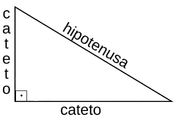
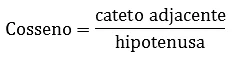
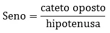
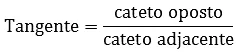

As relações trigonométricas surgem da análise dos ângulos de um triângulo retângulo. As mais comuns são:
Essas relações surgem da divisão entre os comprimentos dos lados de um triângulo retângulo, daí o nome "razões" trigonométricas.

Os ângulos agudos de um triângulo retângulo são chamados de complementares.
Em outras palavras, se um deles tem medida x, o outro terá medida (90° - x).
No triângulo retângulo, é fundamental entender que a hipotenusa é o lado oposto ao ângulo reto e, consequentemente, é o lado mais longo do triângulo. Por outro lado, os catetos são os lados adjacentes que formam o ângulo de 90°.
Com estas informações,as razões trigonométricas no triânuglo são:
  Lembrando que estes ângulos são muito importantes para aprender.
Os ângulos notáveis são aqueles que aparecem com maior frequência nos estudos das razões trigonométricas.
Aqui está a tabela com os valores dos ângulos de 30°, 45° e 60°:
| Ângulo | Seno | Cosseno | Tangente |
|---|---|---|---|
| 30° | 1/2 | √3/2 | √3/3 |
| 45° | √2/2 | √2/2 | 1 |
| 60° | √3/2 | 1/2 | √3 |